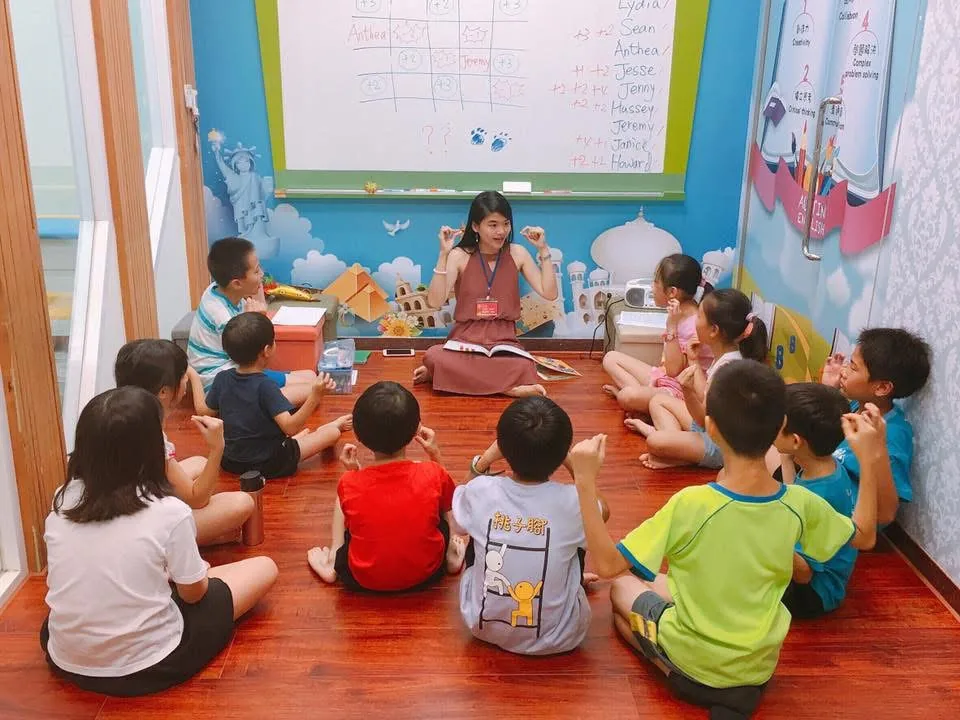
SPEAK
英文基礎與表達
從故事、生活主題與對話練習開始，讓孩子慢慢習慣用英文說出觀察和想法。
聽說互動・故事分享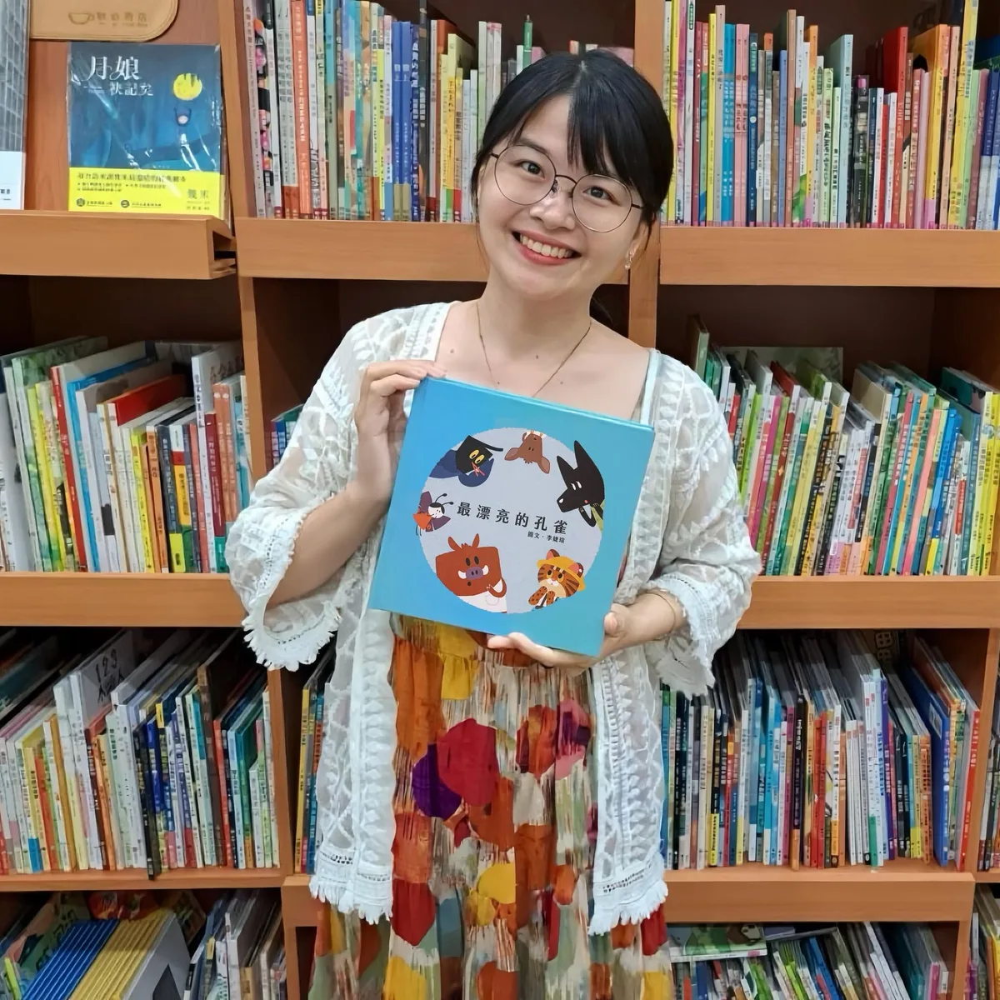
THE WAY WE LEARN
把英文放進故事、任務與生活情境裡，依孩子的年齡與程度調整內容，讓學習更有參與感。

從故事、生活主題與對話練習開始，讓孩子慢慢習慣用英文說出觀察和想法。
聽說互動・故事分享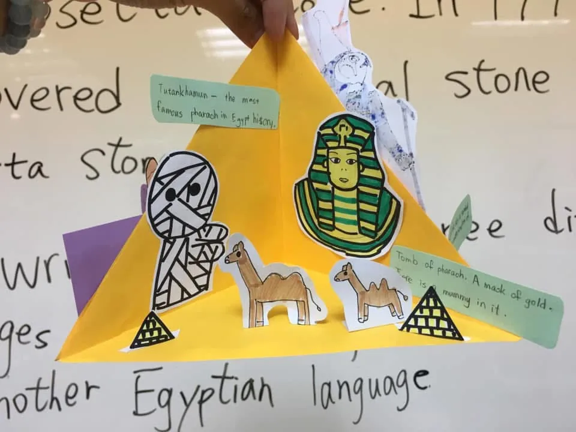
把英文和歷史、文化、科學及藝術結合；邊做主題作品，邊學著介紹自己的發現。
世界文化・STEAM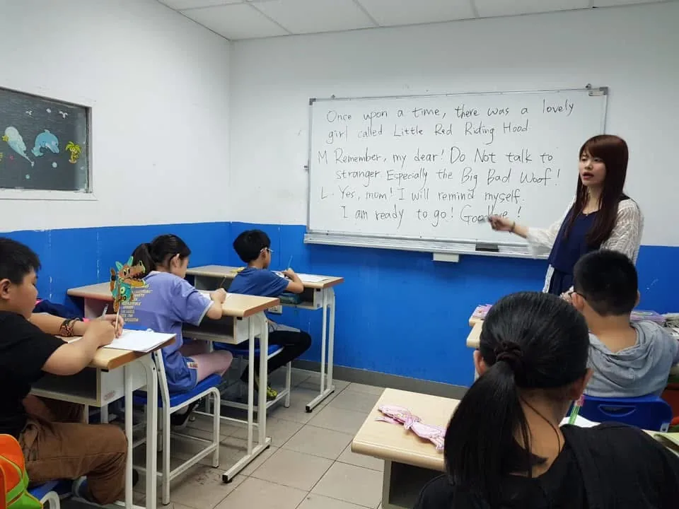
從角色和情節出發，透過紙偶、戲劇與繪本，把練習變成孩子願意投入的故事。
角色扮演・繪本共讀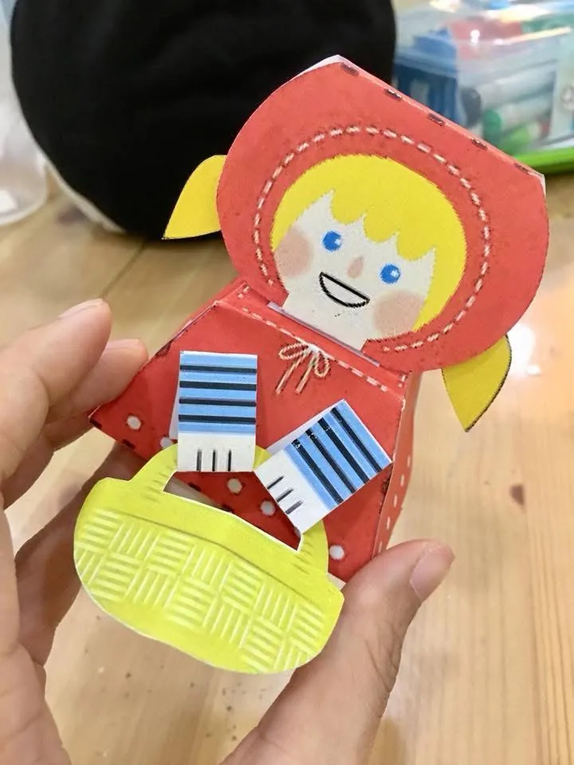
運用教具、圖像和手作任務，讓幼兒透過觀察、操作與創作建立學習動機。
幼兒探索・創意手作LITTLE MOMENTS, BIG IDEAS
不只記下上課的樣子，也留下孩子親手完成的作品。(過去教學與主題活動的片段如下)
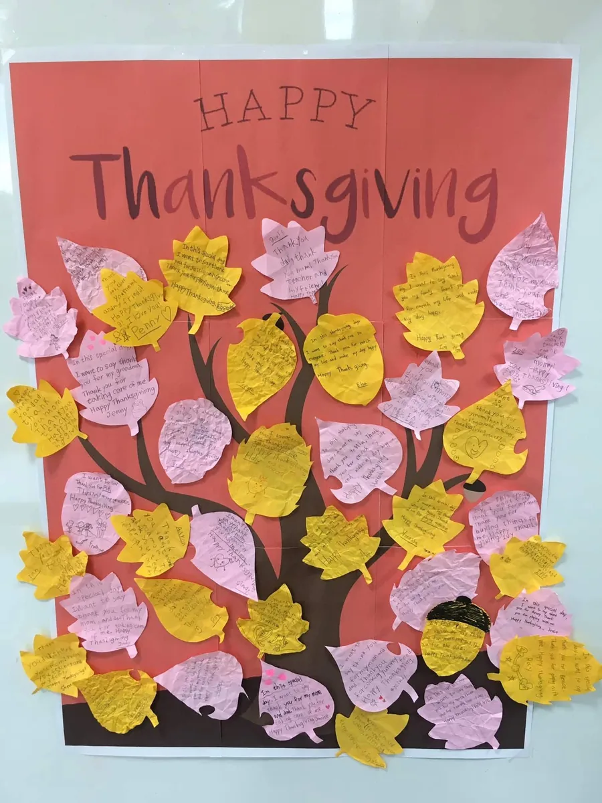
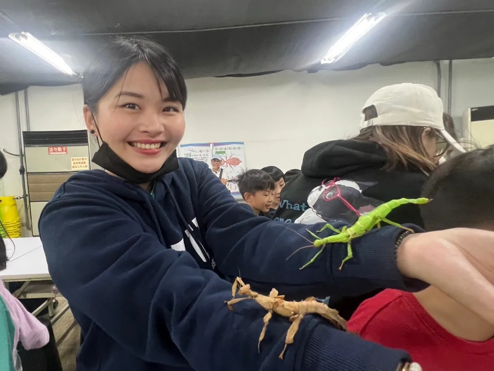
讓孩子在說、在做、在分享的過程中，練習使用英文。
教學理念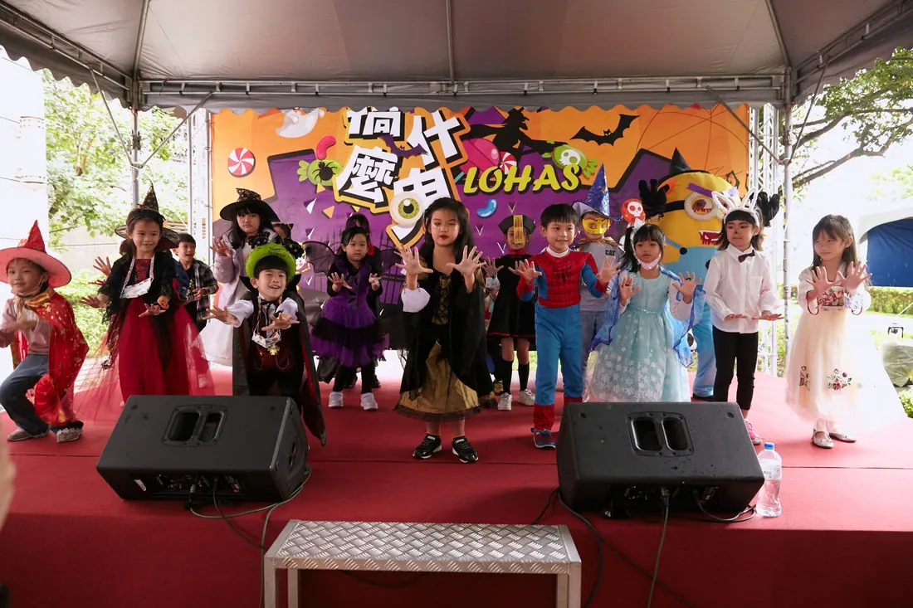
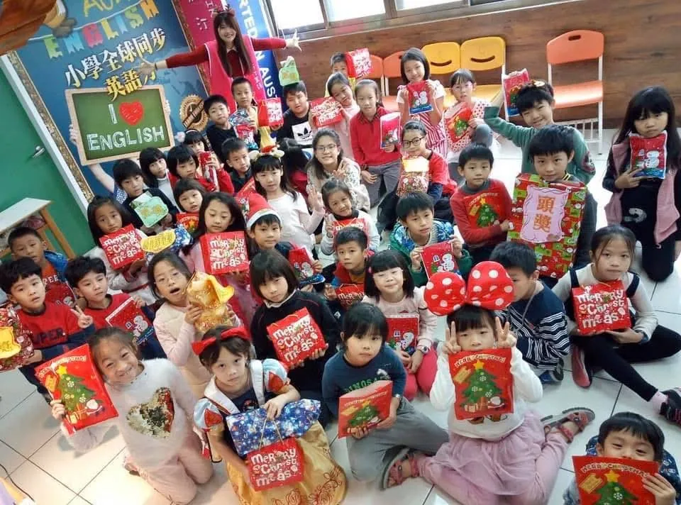
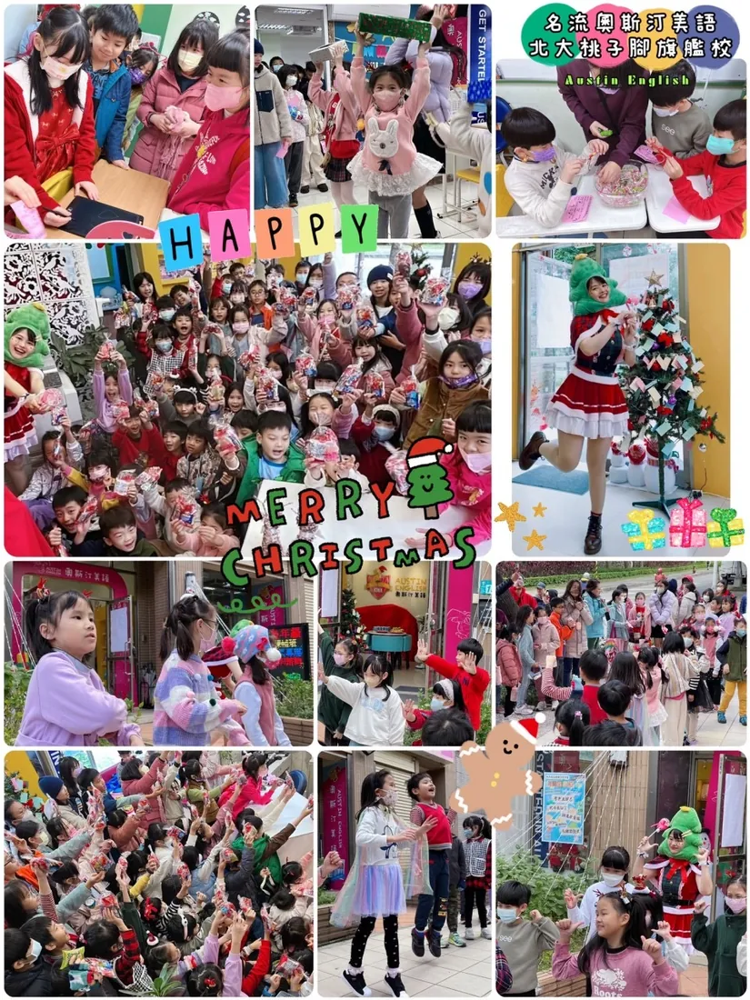
HELLO, I'M MIA
小時候家裡常放 ICRT，英文一直像生活裡的老朋友。從大學開始走進教學現場，一轉眼，已累積 15 年以上的英文教學經驗！
我曾在台南、台北的佳音任教，也在奧斯汀美語擔任英語部主任六年，後來到蒙特梭利幼兒園教英文。現在來到新竹，我想把故事、戲劇、畫畫與動手做帶進課堂，陪孩子練習開口，找到自己的表達方式。
課餘我愛用 iPad 畫畫，也在創作繪本。很期待和孩子一起，發現英文好玩的地方！
QUALIFICATIONS
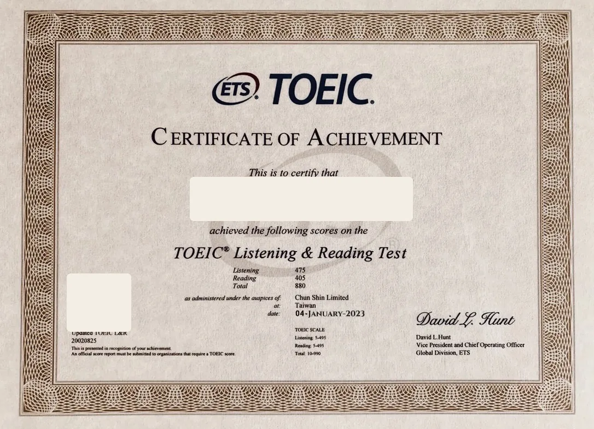
點圖放大聽力與閱讀測驗
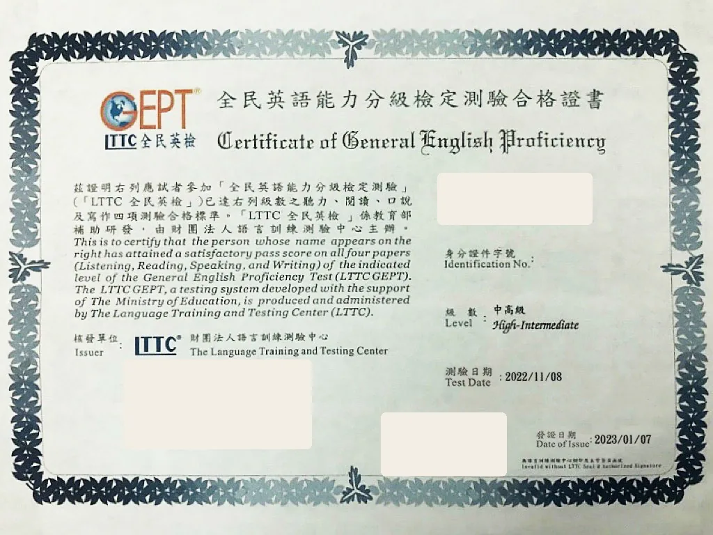
點圖放大聽、說、讀、寫通過
中華語文教育推廣學會・結業證書
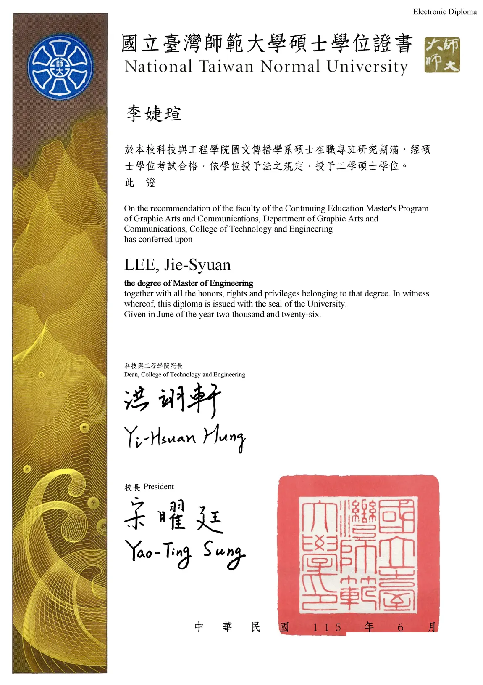
點圖放大圖文傳播學系・工學碩士
LET'S TALK
目前規劃新竹地區 1–5 人英文應用小班。課程內容與安排，可依孩子的年齡、英文程度及興趣討論。